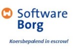
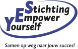
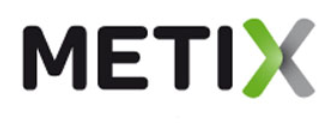
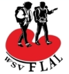
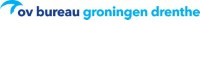
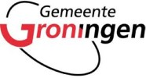

27 Sep 2018
Referenties
Partners
|  |  | |
|  |
- Via Softwareborg voer ik broncode-inspecties uit voor ESCROW-deponeringen.
- Via Stichting Empower Yourself geef ik omscholingscursussen voor mensen met een afstand tot de arbeidsmarkt.
- Via Probatius biedt ik ondersteuning aan juristen door het vastleggen van (digitaal) bewijs en het inspecteren van broncode.
- Via Metix voer ik automatiseringsprojecten in het Openbaar Vervoer uit.
Opdrachtgevers
|  | ||
 |
 | |
|  |
- Voor Stichting INLIA heb ik een cliëntregistratiesysteem ontwikkeld.
- Voor de Friese Langeafstandslopers heb ik een systeem ontwikkeld voor leden- en tochtregistratie.
- Voor SoberCare heb ik een rapportagesysteem ontwikkeld.
- Voor bHosted heb ik een Drop Catch Service ontwikkeld.
- Voor het OV-bureau Groningen Drenthe het ik de Europese aanbesteding en het aansluitende project van een DRIS-systeem voorbereid en begeleid.
- Voor de Provincie Groningen heb ik het ontwerp en de realisatie van MMRIs begeleid.
- Voor de Gemeente Groningen heb ik de aanbestediing en uitvoering van DRIS P+R Hoogkerk begeleid.